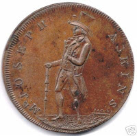

Joseph Askins Halfpenny token
4/22/2010
While being given a tour of his very nice collection of ventriloquist memorabilia a year or so ago, J. D. (Jim) Haile showed me his rare Joseph Askins coin. I'd always wanted to have a collector coin minted, but costs were always prohibitive. However, seeing that rare piece inspired me again and was a reminder that if I ever wanted to do it, I better do something about it. So I did! And the first one I mailed out went to my friend, Jim. Now, many of you own (or will soon own) one of my coins as a result of visiting this blog. I hope in days to come you will show it to your friends and fellow vents.
But back to the Askins coin. Jim sent me the following information about that coin (shown here), taken from I Can See Your Lips Moving, by Valentine Vox:
"This copper halfpenny token with the image of Joseph Askins, a ventriloquist at the end of the eighteenth century. His real name was Thomas Haskey, born in Walsall in 1771. Haskey was a apprentice bridle and bit maker in Bloxwich, before going into the King's army.
"It was while serving in the King's forces, he lost the lower part of his left leg. Haskey returned home after his discharge and worked helping potato farmers plant their crops using his peg leg to make the holes to plant the potatoes.It was at this time Haskey saw the performance of James Burns, a local Ventriloquist. Haskey was impressed and began imitating him.
"In time Haskey started doing small theaters in Walsall were he became so well known that he was asked to perform at Sadler's Wells Theater in London.Haskey changed his name to Askins and made his debut on the London stage in 1796 as Mr. Joseph Askins. During his first season at Sadler's Wells in 1796 he had this token struck. He was sometimes called 'The man with one leg and two voices.'"
{kind=link}

But back to the Askins coin. Jim sent me the following information about that coin (shown here), taken from I Can See Your Lips Moving, by Valentine Vox:
{kind=link}
"This copper halfpenny token with the image of Joseph Askins, a ventriloquist at the end of the eighteenth century. His real name was Thomas Haskey, born in Walsall in 1771. Haskey was a apprentice bridle and bit maker in Bloxwich, before going into the King's army.
"It was while serving in the King's forces, he lost the lower part of his left leg. Haskey returned home after his discharge and worked helping potato farmers plant their crops using his peg leg to make the holes to plant the potatoes.It was at this time Haskey saw the performance of James Burns, a local Ventriloquist. Haskey was impressed and began imitating him.
"In time Haskey started doing small theaters in Walsall were he became so well known that he was asked to perform at Sadler's Wells Theater in London.Haskey changed his name to Askins and made his debut on the London stage in 1796 as Mr. Joseph Askins. During his first season at Sadler's Wells in 1796 he had this token struck. He was sometimes called 'The man with one leg and two voices.'"